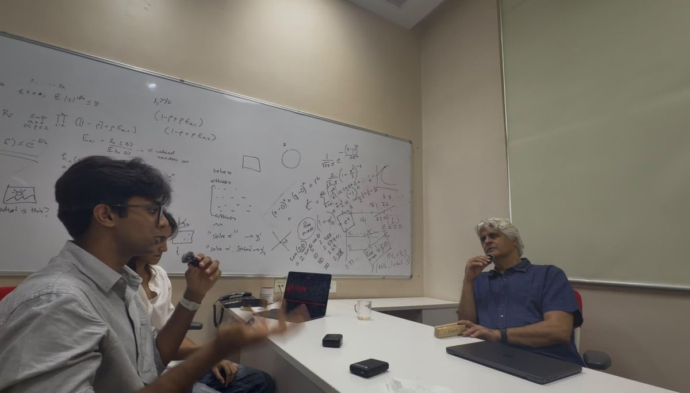

Hi, I'm Akshat!
I like building things and dragging good ideas out into the open where people can use them.
talk to me about economics, anthropology, philosophy, mathematics and public policy: bhaskarakshat22@gmail.com
some interesting things about me:
- Financial Literacy
Most of what I've built started with one idea: that financial literacy shouldn't be a privilege.
I founded the India chapter of the Edunomix Institute, a US 501(c)(3) nonprofit, and built its first presence in South Asia. We ran a nationwide essay competition across nineteen states and fifty-four schools, held camps in personal finance, and, through the Ukraine Speaks English initiative with Learn and Teach UA, taught economics to displaced Ukrainian students whose schooling had been interrupted by the war.

The same idea carried into TaxCity, a government-recognised card game that teaches tax filing, where I served as Chief Financial Officer. It reached over 79,000 students across 27 countries and raised more than $120,000 in grants. We eventually wound it down: even with the grants, giving away thousands of free kits across India was no longer financially sustainable, so we donated what was left to a few government schools we had visited. Take a look at the game.

And because ideas are only as useful as their reach, I host the Decoded Podcast, where we interview economists and technologists and translate their ideas and breakthroughs for a general audience. It has won three Spotify for Creators awards and passed three hundred listening hours.

More recently, I've come to see that literacy alone is not enough of a defence. So I have started studying financial misinformation itself: how false financial claims spread across Indian social media, and who is most likely to pass them on. It is the same mission from a different angle, helping people navigate money safely, and it is what I spend most of my time on now.
- how did I get into research?
In 10th grade, I entered the Pivotal International Essay Competition and wrote about the economic and social impact of AI, and mostly the policy surrounding it. I loved the topic. I placed in the international top 1% and got to choose ten books as a prize, delivered to my door.
I wanted to explore more, so I did. I got involved in an AI research project, spoke to a lot of people, and eventually began working under a professor. That research on the socio-economic dimensions of AI, under Professor Surbhi Goel at the University of Pennsylvania, became a peer-reviewed paper published in IJRASET, which I presented at the NYC STEM Research Conference in 2025 as the only high-school student presenting. One thing led to the next, and I haven't stopped since.
- I took a gap year after high school. What did I do?
The first half of my gap year went to mathematics. I did a residential mathematics apprenticeship under Professor Shanta Laishram, Head of the Theoretical Statistics and Mathematics Unit (Stat-Math Unit) at the Indian Statistical Institute (ISI), Delhi, working in advanced number theory, hosted at Ashoka University. I received a 10,000 INR research stipend, and all in all, it was one of the most fulfilling summers of my life!

I was also a Teaching Assistant to the Lodha Genius Programme 2026, an undergraduate teaching position that the programme made an exception to include me in. Over four weeks, housed at Ashoka University, I worked across four completely different courses: the Mathematics of Investing, Rubik's Cube and Group Theory, Basic but Essential Mechanics, and Origami and Advanced Geometry.
Then, for the latter part of my gap year, I worked on a completely different question. Throughout my work in financial literacy, I had assumed ignorance was the disease and information the cure. I had slowly realised that a literate mind is not a protected one. Fear clouds it, and so does the glitter of easy opportunity. My earlier work still stood, Edunomix, TaxCity, and Decoded had all done real good, and I am still running Edunomix and Decoded, but I had started to see that literacy is only one part of the story. Whether someone falls for a scam, or forwards one, often has less to do with what they know and more to do with how they feel. So once I landed back in Delhi from Ashoka, I began exploring that full time: under the guidance of Professor Hemant Kakkar at the Indian School of Business, I am now studying how financial misinformation spreads across Indian social media, using language models built for Indian languages (MuRIL and XLM-RoBERTa), since so much of the false content is code-mixed "Hinglish", paired with validated psychological instruments to work out not just which posts are false, but who is most likely to pass them on. Check out the GitHub!
I also kept running Edunomix day to day and launched the second edition of our nationwide essay competition, judged by economics scholars from Harvard, UC Berkeley, Cornell, and Warwick. We ran the Ukraine Speaks English seminars again this season with Learn and Teach UA, free financial education for students across Ukraine.
And I expanded the Decoded team out from just Amaira and me into a real operation, with more than 20 volunteers across research, social media, and outreach, and worked on a collaboration with HERizon on various events.
- I was awarded by the Hon'ble President of India at the age of 17. HOW?
Completing Microsoft's "AI to be Aware" program under the Government of India's SOAR Initiative culminated in one of the most memorable experiences of my academic journey. I was selected as one of only 17 students nationwide to be felicitated by the Hon'ble President of India, Smt. Droupadi Murmu, at Rashtrapati Bhavan for my work in Artificial Intelligence.
The ceremony brought together distinguished guests, including Members of Parliament and Union Ministers from the Ministries of Education and Skill Development & Entrepreneurship. During her address, the President spoke about the transformative role of Artificial Intelligence in India's future, emphasising the responsibility of young innovators to apply technology in service of society and national development.
Following the felicitation, I had the opportunity to briefly interact with the President and later met Shri Jayant Chaudhary, Union Minister of State (Independent Charge) for Skill Development and Entrepreneurship, discussing the role of Artificial Intelligence in advancing skill development across India.
Being recognised at Rashtrapati Bhavan by the President of India was both a tremendous honour and a reminder of the responsibility that comes with pursuing research and innovation in emerging technologies. It reinforced my commitment to contributing to AI not only as a technical discipline, but as a field with profound implications for public policy, society, and economic development.

- Timeline?
Reach Me
If any of this overlaps with what you're building, a startup, a podcast, a research project, a nonprofit, whatever it is, I'd like to hear about it. Write to me at bhaskarakshat22@gmail.com; I usually reply to short emails with a clear ask.
Or reach the things I run directly:
Edunomix
Join or enquire: edunomixinstitute@gmail.com
Learn more: edunomixinstitute.com
Decoded
Join: team@thedecodedpodcast.com
Guests & ideas: outreach@thedecodedpodcast.com
Everything else: akshat@thedecodedpodcast.com
Learn more: decodedpodcast.vercel.app
DocsDocs Technologies
Join or enquire: akshat.bhaskar@docs-docs.com